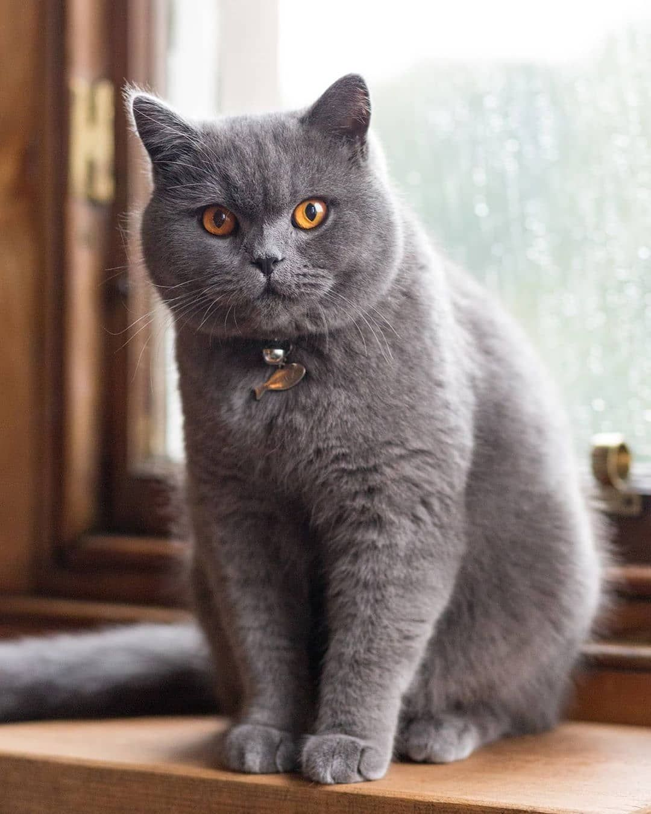
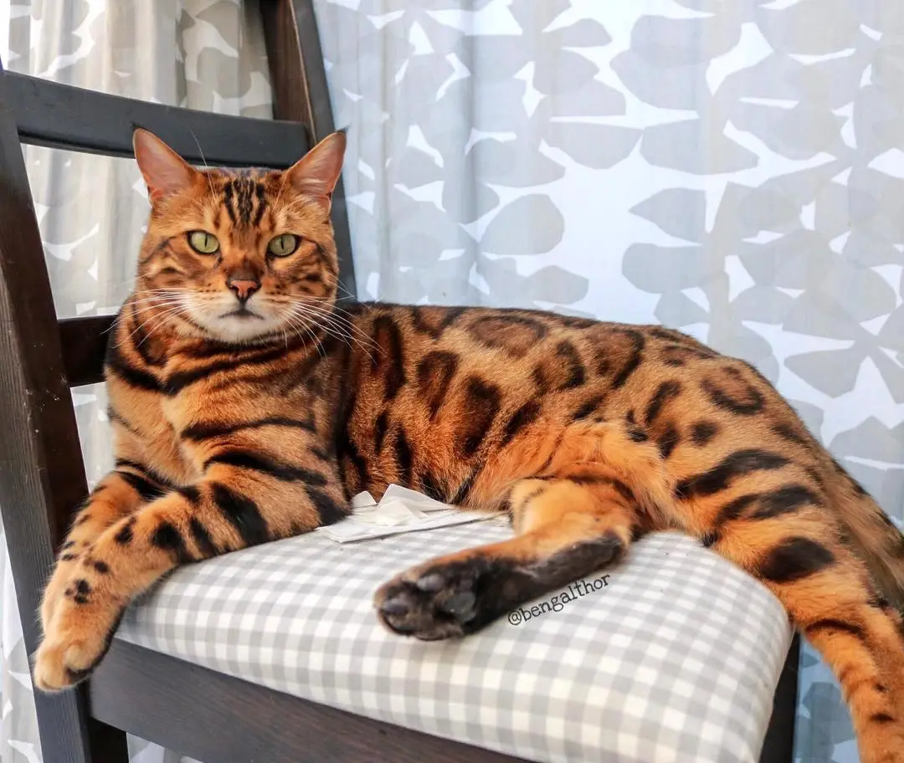
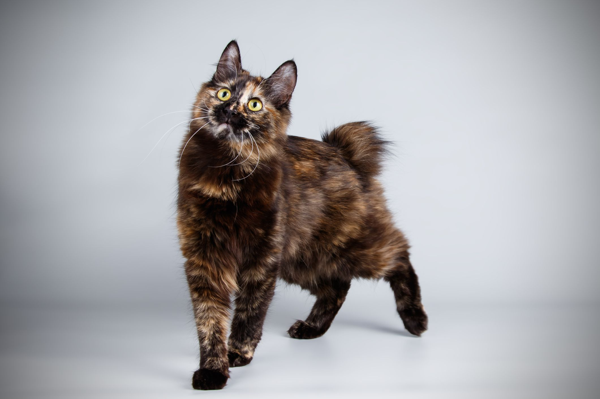

This is a British Shorthair. They need daily brushing for their thick coats, especially during seasonal changes.

Right here is a Bengal cat! Bengal cats enjoy playing in water and are highly trainable pets.

The Kurilian Bobtail is a very active breed and is known for being a good swimmer, jumper, and hunter.

Despite the LaPerm's unusual hair, it is actually quite an easy breed to maintain and care for. LaPerms can also be born hairless.
CatLover21
the kurilian bobtail is so cute!
LeotheLion
I wish I had a Bengal cat. They are very beautiful! :)
bubblekitten
I used to own a British Shorthair—it's so much work to brush them.
JillFerrell
Anyone know if LaPerms can have white fur? My cat look a bit like a LaPerm but she is all white.